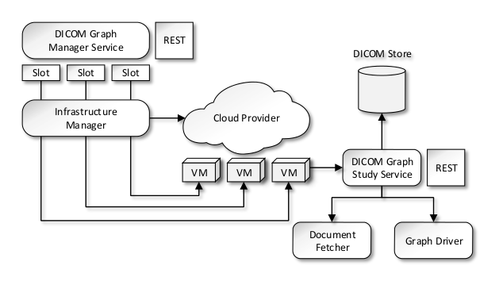

Gpf4Med is a modular framework for the integration and study of medical information, which is distributed under the European Union Public License (EUPL v.1.1). Currently, a module is available that allows the study of clinical reports on breast cancer. The framework supports DICOM-SR to facilitate interoperability among studies collected at different centres using clinical examination, medical imaging (mammography, ultrasound, magnetic resonance imaging -- MRI) and biopsy.
The data is combined in a graph and the different medical terminologies and ontologies annotations are used to interconnect the objects represented in the graph (e.g. patient, lesion, exploration). Other types of information may be integrated in the future when other information becomes available, such as genetic, histopathological, biomolecular and pharmacological data.
A RESTful service is provided that allows users to query the graph. The framework can leverage on Cloud computing resources to address the study of large datasets. Indeed, the framework aims at supporting studies that cannot be addressed solely using the traditional storage and computing systems of the hospital.
Gpf4Med is provided as a single JAR file that contains all software dependencies within. This JAR is intended to be deployed with a POSIX-based server and consists of a HTTP server and a graph database.
To install the DICOM graph study service, create the directory /opt/gpf4med/ and extract the latest version of the framework. For example:
$ mkdir /opt/gpf4med/ ; cd /opt/gpf4med/ ; tar xvzf gpf4med-distro-1.0.0.tar.gz
After the framework is installed, you can execute the JAR with Java to run the service with the default configuration parameters:
$ java -jar lib/java/gpf4med.jar
This will start the DICOM graph study service with WADL available in:
http://<hostname>:8080/gpf4med/application.wadl
Optionally, you can pass the option --daemon|-d to the service to start the service in daemon mode (detached from the console):
$ java -jar lib/java/gpf4med.jar -d
You may deploy as many instances of the DICOM graph study service as you need to address large-scale studies. In order to do so, you should deploy an instance of the DICOM graph manager service to configure and use the DICOM graph study service instances in your study.
Next sections provide further details about configuration options.
You should have the following structure of directories, after you installed the DICOM graph study service in your local file-system:
/opt/gpf4med
|-> bin/
| `-> gpf4med
|-> etc/
| |-> gpf4med.xml
| |-> gpf4med-container.xml
| `-> logback.xml
|-> htdocs/
| `-> *
|-> lib/
| `-> java/
| `-> gpf4med.jar
`-> LICENSE
The directory etc/ contains the base configuration file of the service and the service container. You can edit the file gpf4med.xml to set the location of the graph plugins and the report templates. Also, you can edit the file gpf4med-container.xml to set the host name or IP address where the service will be binded. Similarly, you can set in this file the network port where the service listens for incoming connections.
To specify different configuration files you can pass the option --configuration|-c to the service:
$ java -jar lib/java/gpf4med.jar -c /opt/gpf4med/etc/
The file logback.xml contains the configuration of the logging system. This file uses the logback configuration file syntax.
To specify a different logging configuration you can pass the option -Dlogback.configurationFile to the Java Virtual Machine:
$ java -Dlogback.configurationFile=/opt/gpf4med/etc/logback.xml -jar lib/java/gpf4med.jar
The gpf4med script in the directory bin/ provides a simple manner to start and stop the service in daemon mode, reading the default configurations from the directory: /opt/gpf4med/etc/.
You can add this script to the path of the default user by creating a link in /usr/local/bin/:
$ sudo ln -s /opt/gpf4med/bin/gpf4med /usr/local/bin/gpf4med
You can start/stop the service with gpf4med following manner:
$ gpf4med start
$ gpf4med stop
By default, a service started in this manner will write its logging messages to the directory: /opt/gpf4med/var/log/. The main log file is: gpf4med.log.
Gpf4Med consists of a graph store and a search engine that are provided in the DICOM graph study service. This service uses the Document fetcher to download the clinical reports from the DICOM store where the information is stored and caches a copy in the local file-system of the server. The Document fetcher can optionally encrypt the cached copy with strong cryptography.
The Graph driver is used to load the reports to the graph. The graph can be accessed directly through the RESTful interface of the DICOM graph study service, or in the case of large studies, through the DICOM graph manager service. The DICOM graph manager service uses the Infrastructure manager to allocate computing and storage resources in a Cloud infrastructure to execute the instances of the DICOM graph study service needed for a specific study. Graph operations that are executed in the DICOM graph manager service, such as searching the graph, will be executed over the complete graph distributed among the instances of the DICOM graph study service.
The framework can be extended with new graphs and operations by adding new plugins to the DICOM graph study service. The list of available plugins are read from a text file (one link per line) and loaded in the service during startup. The plugins can be configured in the gpf4med.xml file.
The plugins can be loaded from the htdocs/ directory of the DICOM graph study
service. For example, to load the plugins from htdocs/connectors, configure your
service to load connectors from:
http://localhost/connectors
or
file:///opt/gpf4med/htdocs/connectors
In a similar manner as new plugins are loaded during service startup, new templates can be loaded too. The list of available templates are read from a text file (one link per line) and can be configured in the gpf4med.xml file.
The templates can be loaded from the htdocs/ directory of the DICOM graph study
service. For example, to load the templates from htdocs/templates, configure your
service to load templates from:
http://localhost/templates
or
file:///opt/gpf4med/htdocs/templates
Gpf4Med can be configured to allocate computing and storage resources from an infrastructure manager. The current version of the framework uses Apache jclouds to provide the DICOM graph manager service with access to a variety of Cloud infrastructure provider. This configuration has been tested with Amazon EC2 and OpenNebula.
To be completed...
The container has a list of authorized DICOM stores and connector providers.
To be completed...
Two configuration parameters are available that allows to encrypt the local storage & cache and to use strong cryptography when available.
Gpf4Med is organized as a Maven project with a bill of materials (BOM) pattern. To build the project, download the latest source code and enter the base directory of the project:
$ cd <WORKSPACE>/gpf4med/
Install the Gpf4Med and the main project POM into your local Maven repository by executing the following Maven command:
$ mvn install:install-file -Dfile=pom.xml -DpomFile=pom.xml
$ mvn clean install -pl gpf4med-project
During the installation of the base BOM and POM, several additional Maven packages and dependencies will be installed in your repository. This step will no longer needed until you upgrade the major version of Gpf4Med (for example from 1.0.0 to 1.1.0).
After the installation is completed, change to the directory of the base project directory and then compile and install the framework to your local Maven repository:
$ cd <WORKSPACE>/gpf4med/gpf4med-project/
$ mvn clean install -pl gpf4med-core,gpf4med-data,gpf4med-service
As with any other Maven-based project, you can skip unit tests by passing the -Dmaven.test.skip=true parameter to Maven:
$ mvn clean install -pl gpf4med-core,gpf4med-data,gpf4med-service -Dmaven.test.skip=true
Optionally, you can create a distribution package to facilitate installation:
$ mvn clean package -pl gpf4med-distro
Finally, you may build the graph plugins and make them available to the DICOM graph study service, for example by serving the plugin JAR file with a HTTP server:
$ mvn clean package -pl gpf4med-graph-base
$ scp gpf4med-graph-base/target/gpf4med-graph-base-<VERSION>.jar
<hostname>:/var/www/gpf4med/connectors/<VERSION>/
You must update your configuration to include the new plugin. For example, if in your gpf4med.xml the graph plugins are loaded from:
http://<hostname>/gpf4med/connectors/<VERSION>/index.txt
Then, you must add a new line to this file in the following manner:
http://<hostname>/gpf4med/connectors/<VERSION>/gpf4med-graph-base-<VERSION>.jar
Also, you must make available the DICOM-SR templates to the DICOM graph study service. For example, you can copy the default templates in the following manner:
$ scp gpf4med-core/src/test/resources/files/templates/*
<hostname>:/var/www/gpf4med/templates/<VERSION>/
Similarly to the graph plugins, update your configuration to include the new templates. For this purpose, update the file from where the templates are loaded. For example:
http://<hostname>/gpf4med/templates/<VERSION>/index.txt
Adding the following lines:
http://<hostname>/gpf4med/templates/<VERSION>/01_Exploration_of_Breast.xml
http://<hostname>/gpf4med/templates/<VERSION>/02_Mamography.xml
http://<hostname>/gpf4med/templates/<VERSION>/03_UltrasoundScan.xml
http://<hostname>/gpf4med/templates/<VERSION>/04_RM.xml
http://<hostname>/gpf4med/templates/<VERSION>/05_BiopsiaPre.xml
http://<hostname>/gpf4med/templates/<VERSION>/06_BiopsiaPost.xml
Start the DICOM graph study service and check that the graph plugins and the report templates are successfully loaded:
http://<hostname>:8080/gpf4med/graphrs/list/graphs
http://<hostname>:8080/gpf4med/graphrs/list/templates
The framework needs at minimum Java 7. If you have more that one version of Java installed at your workspace, you may need to add Java 7 to your path. For example, you can do so with the following:
$ export JAVA_HOME=/usr/local/sw/java/jdk1.7.0_45 ; export PATH=$JAVA_HOME/bin:$PATH ; java -version
The Maven module gpf4med-service contains the code of the DICOM graph study service. This module was created from the Maven archetype for JAX-RS services with Jervey and Grizzly:
$ mvn archetype:generate -DarchetypeGroupId=org.glassfish.jersey.archetypes
-DarchetypeArtifactId=jersey-quickstart-grizzly2 -DarchetypeVersion=2.5.1
You can check how your changes affects the framework, after you introduced a new update in the code of the DICOM graph study service by executing Maven with the following parameters:
$ mvn clean compile exec:java -pl gpf4med-service
The Maven module gpf4med-enactor contains the code of the DICOM graph manager service. This module was created from the Maven archetype for Jersey-based web application projects:
$ mvn archetype:generate -DarchetypeGroupId=org.glassfish.jersey.archetypes
-DarchetypeArtifactId=jersey-quickstart-webapp -DarchetypeVersion=2.5.1
Further documentation resources:
To create a new graph plugin (connectors), implements the interface org.grycap.gpf4med.ext.GraphConnector and annotate your class with the information about authorship and version of your plugin. For example:
package my_package;
@Author(name = "MY INSTITUTION")
@Version(version = 10000)
@PluginImplementation
public class MyConnector implements GraphConnector {
@Override
public String path() {
return "my-graph";
}
...
}
You can use the Maven module gpf4med-graph-base as a reference for the development of new graph connectors.
The framework uses the new assertion mechanism based on Hamcrest, which is available as of JUnit 4.4. For additional information see:
Mockito is also used when Java mocks are needed.